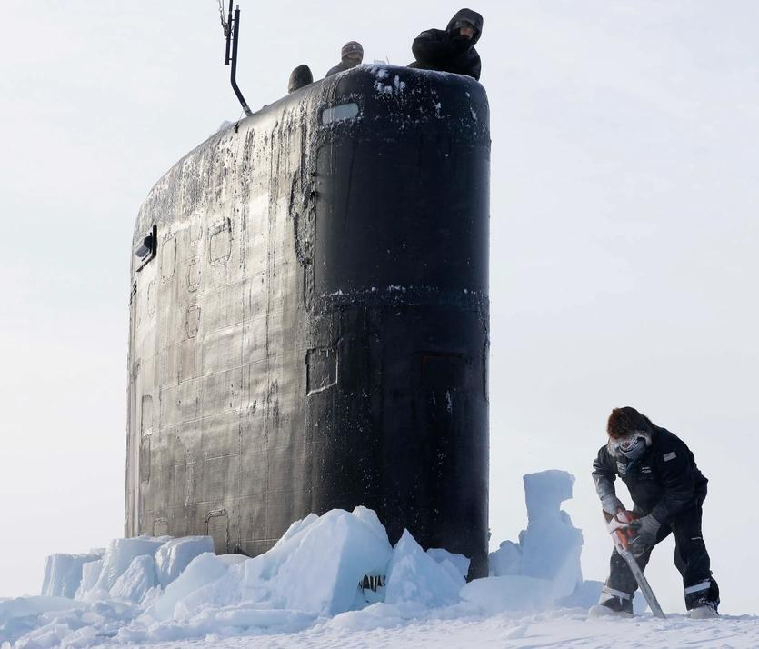

Mission
To advocate for the health, recognition, and care of all U.S. Navy Submariners through scientific research, public education, and legislative advocacy.
We are committed to:
- Driving research into submarine-related atmospheric contaminants and other occupational exposures.
- Supporting legislation that protects and benefits Submariners.
- Educating veterans, families, healthcare providers, and policymakers.
- Ensuring every Submariner has access to information, advocacy, and a voice when facing service-connected health challenges.
